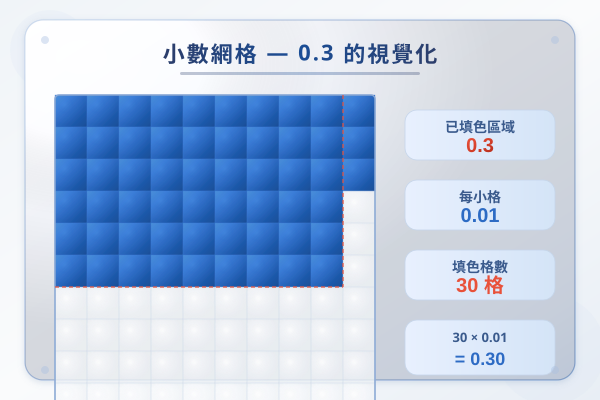

| # | 題目 | 答案 | 類型 |
|---|---|---|---|
| 1 | 計算 48 ÷ 6 = ？ | 8 | auto |
| 2 | 計算 125 ÷ 5 = ？ | 25 | auto |
| 3 | 計算 3.6 + 2.4 = ？（P5 小數加法複習） | 6 | auto |
| 4 | 計算 5.8 − 2.3 = ？（P5 小數減法複習） | ___ | manual |
| 5 | 把 4.5 元寫成「___元___角」 | ___ | manual |
| 例1 | 3.6 ÷ 3 = ？ | 2 | auto |
| 例2 | 9.2 ÷ 4 = ？ | 0...2 | auto |
| 6 | 4.8 ÷ 0.6 = ？ | 8 | auto |
| 7 | 5.4 ÷ 0.9 = ？ | 6 | auto |
| 8 | 2.4 ÷ 1.2 = ？ | 4 | auto |
| 9 | 7.2 ÷ 2.4 = ？ | 1 | auto |
| 10 | 9.1 ÷ 1.3 = ？ | 1 | auto |
| 11 | 1.7 ÷ 0.5 = ？（求商和餘數） | 3.40 | auto |
| 12 | 2.5 ÷ 0.7 = ？（求商和餘數） | 3.57 | auto |
| 13 | 4.3 ÷ 1.2 = ？（求商和餘數） | 3 | auto |
| 14 | 5.8 ÷ 1.6 = ？（求商和餘數） | 8 | auto |
| 15 | 3.2 ÷ 0.9 = ？（求商和餘數） | 3.56 | auto |
| 16 | 一根繩子長 9.6 米，每 2.4 米剪成一段。可剪成多少段？ | 4...1 | manual |
| 17 | 小明有 20 元，每枝鉛筆售 3.2 元。最多可買多少枝？還剩多少元？ | 2 | manual |
| 18 | 6.4 ÷ 2 = ？ | 2 | auto |
| 19 | 8.1 ÷ 3 = ？ | 0...1 | auto |
| 20 | 4.5 ÷ 5 = ？ | 1 | auto |
| 21 | 2.4 ÷ 0.4 = ？ | 6.00 | auto |
| 22 | 6.3 ÷ 0.9 = ？ | 7 | auto |
| 23 | 3.6 ÷ 1.2 = ？ | 6 | auto |
| 24 | 9.75 ÷ 2.5 = ？ | 37...1 | auto |
| 25 | 14.4 ÷ 3.6 = ？ | 1...1 | auto |
| 26 | 0.84 ÷ 0.12 = ？ | 7 | auto |
| 27 | 1.26 ÷ 0.3 = ？ | 4.20 | auto |
| 28 | 2.8 ÷ 0.7 = ？（求商和餘數） | 4 | auto |
| 29 | 3.5 ÷ 0.6 = ？（求商和餘數） | 5.83 | auto |
| 30 | 5.76 ÷ 1.8 = ？ | 76 | auto |
| 31 | 0.056 ÷ 0.007 = ？ | 8 | auto |
| 32 | 4.7 ÷ 1.3 = ？（求商和餘數，商取整數） | 7 | auto |
| 33 | 一條絲帶長 15.6 米，每 2.4 米做一個蝴蝶結。最多可做多少個？還剩多少米絲帶？ | 1 | manual |
| 34 | 3.85 ÷ 1.1 = ？（求商至小數點後一位，並寫出餘數） | 85 | auto |
| 35 | 一瓶橙汁 2.4 升，平均分給 6 人。每人得橙汁多少升？ | 0...2 | manual |
| 36 | 5.5 公斤的米，每 0.5 公斤裝一袋。共可裝多少袋？ | ___ | manual |
| 37 | 一張長方形紙的面積是 18.6 cm²，長是 6.2 cm。闊是多少 cm？ | ___ | manual |
| 38 | 爸爸駕車 3.5 小時行駛了 227.5 公里。平均每小時行駛多少公里？ | 0...3 | manual |
| 39 | 一個長方形花園的周界是 18.4 米，闊是 3.6 米。長是多少米？ | 44 cm | auto |
| 40 | 小美用 38.5 元買了 5.5 公斤的蘋果，每公斤蘋果售多少元？ | 7...3 | manual |
| 1 | 計算：(8.4 − 2.7) ÷ 1.9 = ？（先計括號內減法，再做除法） | ___ | manual |
| 2 | 小明有 100 元，買了 3 本每本售 15.8 元的書。餘下的錢每枝 3.5 元的原子筆最多可買多少枝？還剩多少元？ | 1 | manual |
| 3 | 超市的橙汁：A 牌子 2.5 升售 32.5 元，B 牌子 1.8 升售 25.2 元。哪個牌子每升較便宜？便宜多少？（答案取至小數點後一位） | 0...2 | manual |
| H1 | 7.2 ÷ 3 = ？ | 0...2 | auto |
| H2 | 9.6 ÷ 4 = ？ | 1...2 | auto |
| H3 | 5.6 ÷ 0.8 = ？ | 7.00 | auto |
| H4 | 3.6 ÷ 1.2 = ？ | 6 | auto |
| H5 | 4.5 ÷ 0.9 = ？ | 5 | auto |
| H6 | 2.8 ÷ 0.7 = ？（求商和餘數） | 4 | auto |
| H7 | 8.64 ÷ 2.4 = ？ | 32 | auto |
| H8 | 一條繩子長 12.8 米，每 3.2 米剪一段。可剪多少段？ | 4 | manual |
| H9 | 3.85 ÷ 0.55 = ？（提示：除數有 2 位小數，同步 × 100） | 7 | auto |
霖楓學苑 · LF Academy · 自動答案生成器 v1.0 · 手動題目請老師覆核